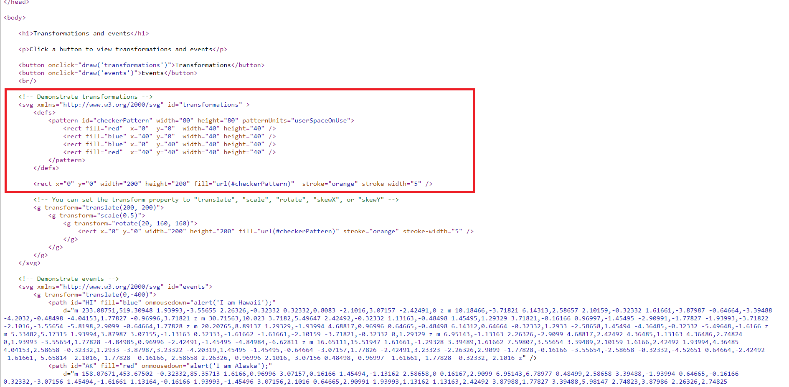
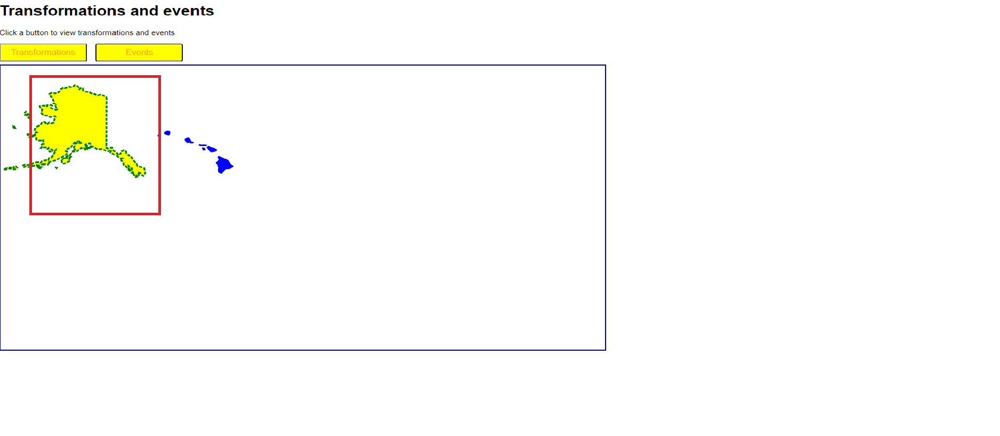
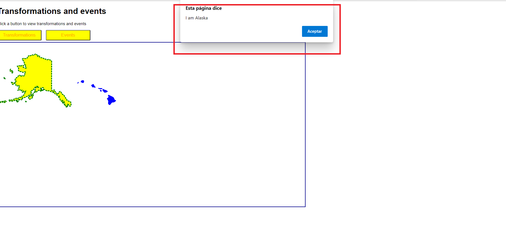
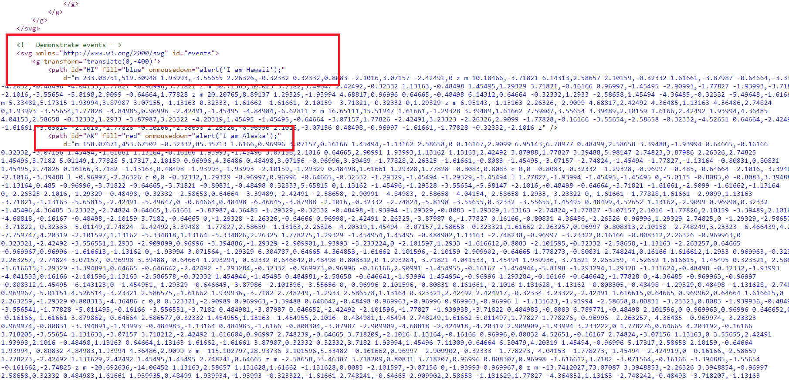
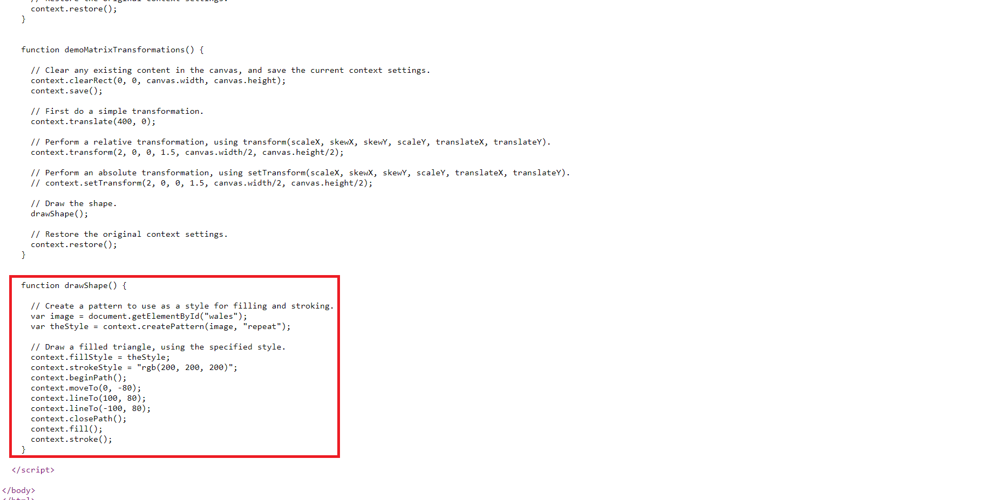
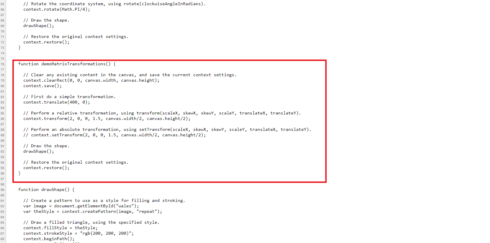

Modulo 11: Creating Advanced Graphics
Lesson 1: Creating Interactive Graphics by Using SVG
Demonstration: Using Scalable Vector Graphics (SVG)
Transformations and Events

Handle Events on SVG Elements
Place the mouse pointer over the red shape on the left side of the window.
Verify that the color of the shape changes to yellow with a dotted green border

Place the mouse pointer over the blue shape on the right side of the window.
Verify that the color of the shape changes to yellow with a dotted green border

n the source window, locate the !-- Demonstrate events comment, and then review the svg elemen.
Check that path elements contain the data that defines the two maps

Lesson 2: Drawing Graphics by Using the Canvas API
Demonstration: Performing Transformations by Using the Canvas API
Perform Simple Transformations
Locate the demoSeperateTransformations and the drawShape function

Perform Matrix Transformation
Check how it is used the transform function to perform a matrix transformation,
and scales, skews, and translates the context in a single function cal
